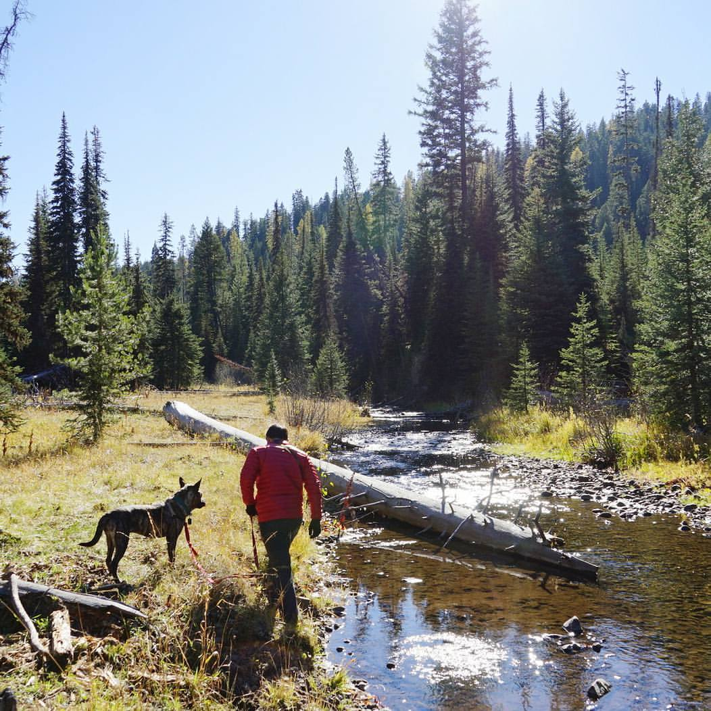

Dominic Montelongo
Github Repositories
Hello World
A primitive webiste that was created with HTML.
Example website
A very primitive website that used HTML
Cookie Recipe website
This was a project to practice using tags with HTML
My first website
This website demonstrates use of unordered lists, a tags, and images with HTML
Favorite Things
This website shows usage of a tags, image placement, and words with emphasis using HTML
Resume Site Resume site was developed to practice css. My partners, Justin and Liz, and I utilized html and css functions.
Resume site was developed to practice css. My partners, Justin and Liz, and I utilized html and css functions.
Resume site was developed to practice css. My partners, Justin and Liz, and I utilized html and css functions.Pets site Pets site was developed to practice html and later with css. My partner, Reese, and I initially developed a similar site with HTML while I adjusted some properties with other partners, Justin and Liz, in advanced HTML and CSS commands.
Pets site was developed to practice html and later with css. My partner, Reese, and I initially developed a similar site with HTML while I adjusted some properties with other partners, Justin and Liz, in advanced HTML and CSS commands.
Pets site was developed to practice html and later with css. My partner, Reese, and I initially developed a similar site with HTML while I adjusted some properties with other partners, Justin and Liz, in advanced HTML and CSS commands. Cat Site Cat blog was developed to practice html. The site is similar to one I created with my partner, Reese. The example is a copy of one created by Justin. My partner, Justin, and I utilized html and css functions to adjust this site after its creation.
Cat blog was developed to practice html. The site is similar to one I created with my partner, Reese. The example is a copy of one created by Justin. My partner, Justin, and I utilized html and css functions to adjust this site after its creation.
Cat blog was developed to practice html. The site is similar to one I created with my partner, Reese. The example is a copy of one created by Justin. My partner, Justin, and I utilized html and css functions to adjust this site after its creation.